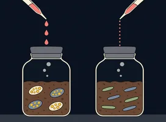
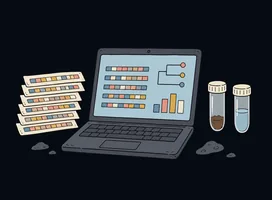
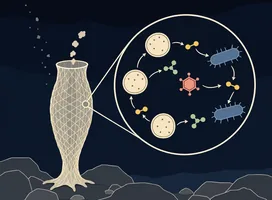
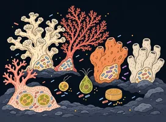
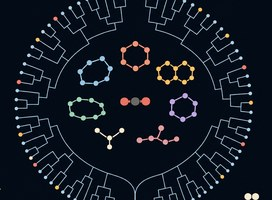

Who am I
I am a microbial ecologist with an interest in biogeochemistry. I study how microbes move carbon, nitrogen and phosphorus through soils and through the bodies of marine hosts, and what their metabolism means for the host and the ecosystem around them. I combine stable isotope labelling with amplicon and metagenome sequencing, as well as metatranscriptomics and metabolomics.
At the University of Sydney I am a Postdoctoral Research Associate in the School of Life and Environmental Sciences. The project I work on asks how soil microbes store carbon and phosphorus inside their cells and how that storage shapes nutrient cycling when supply comes in pulses rather than at a steady rate. My part is the carbon budget, followed with ¹³C labelling from a pulse of carbon into microbial biomass and storage compounds and back out as CO₂. I also jointly supervise two PhD students and one Honours student on related questions.
My PhD at UNSW Sydney (2025) asked how deep sea sponges feed in the dark. Working on sponges collected off Rio de Janeiro, I showed that ammonia oxidising archaea dominate their microbiomes, fix carbon with energy from the host’s ammonia and appear to be inherited within each sponge species, while bacterial partners break down the tough carbon of marine snow. To find that autotrophy in the first place I built hidden Markov models for the key carbon fixation enzymes and tested them across 52,515 bacterial and archaeal genomes, which turned up the capacity to fix carbon in lineages thought to be strictly heterotrophic. I hold an adjunct fellowship at UNSW, where I continue to collaborate on marine symbioses.
Before moving to Australia I completed a BSc in biological sciences at the University of Campinas and an MSc in microbiology at the Federal University of Rio de Janeiro, where my thesis on hydrogen and methane from palm oil mill effluent won the Chemistry Institute’s best master thesis award.
Research themes

Soil carbon, nitrogen and phosphorus under climate extremes
How the timing of water and nutrient supply decides which microbes grow, what they store and how much carbon the soil keeps. Stable isotope incubations with amplicon and metagenome sequencing at the University of Sydney. Current work.

From raw reads to answers
Pipelines written at the University of Sydney. HiFiTaxa takes PacBio reads to taxonomy in a single command, and AmplinkOne carries the resulting tables through the downstream analysis in R. Current work.

Life without light
How deep sea sponges feed in the dark. Ammonia oxidising archaea that run on host ammonia, bacteria that break down the tough carbon of marine snow, and a virus that links them.

Who the symbionts are and where they live
Collaborative papers from deep sea expeditions off Brazil, on the symbiont lineages that recur across corals, crinoids and sponges, on their names and genomes, and on how microbiomes differ between hosts and places.

Carbon fixation across the tree of life
Hidden Markov models for the key enzymes of the six known pathways, run across 52,515 genomes and then on the sponge symbionts. The capacity to fix carbon reaches lineages long thought to be strictly heterotrophic.
Selected papers

Ammonia oxidation and recalcitrant carbon degradation fuel mixotrophic growth in the symbiont community of a deep-sea sponge
N. Garritano, A et al. Microbiome 14, 153 (2026)Metagenomics, metatranscriptomics and stable isotope labelling show a deep sea sponge symbiont community that lives on both ammonia and recalcitrant carbon from marine snow.

Simple Porifera holobiont reveals complex interactions between the host, an archaeon, a bacterium, and a phage
N. Garritano, A et al. The ISME Journal 18, wrae197 (2024)The simplest sponge holobiont reported to date, with an archaeon, a bacterium and a phage exchanging fumarate and vitamin B12. Covered by BBC News.

Symbiotic Ammonia Oxidation in the Marine Environment
Thomas T, N. Garritano, A. Annual Review of Marine Science 18, 409–427 (2026)An invited review of ammonia oxidising microbes living in or on marine animals, from sponges and corals to bivalves and crustaceans.

Carbon fixation pathways across the bacterial and archaeal tree of life
N. Garritano, A, Song W, Thomas T. PNAS Nexus 1, pgac226 (2022)Hidden Markov models screened 52,515 genomes and found carbon fixation in lineages where it had not been recognised.
Recent
- Nov 2026
New paper in Scientific Data. Metagenome-assembled genomes and viral sequences from deep-sea sponges
- Nov 2026
HiFiTaxa preprint on bioRxiv. A single command Nextflow pipeline for PacBio HiFi 16S rRNA gene and ITS amplicons, with Flúvio Modolon and Charles Warren. Preprint and code.
- Nov 2026
New paper in ISME Communications. The novel, wide-spread sponge-associated phylum Spongivicinota shows metabolic complementarity to its sister-phylum Latescibacterota
- Oct 2026
New paper in Sustainable Microbiology. Contrasting microbiomes in deep-sea scleractinian and octocoral species from the South Atlantic Ocean
- Aug 2026
Invited talk at the annual general meeting of the Australian Society for Microbiology NSW/ACT Branch, on deep sea sponges in the carbon cycle.
- May 2026
New paper in Microbiome. Ammonia oxidation and recalcitrant carbon degradation fuel mixotrophic growth in the symbiont community of a deep-sea sponge